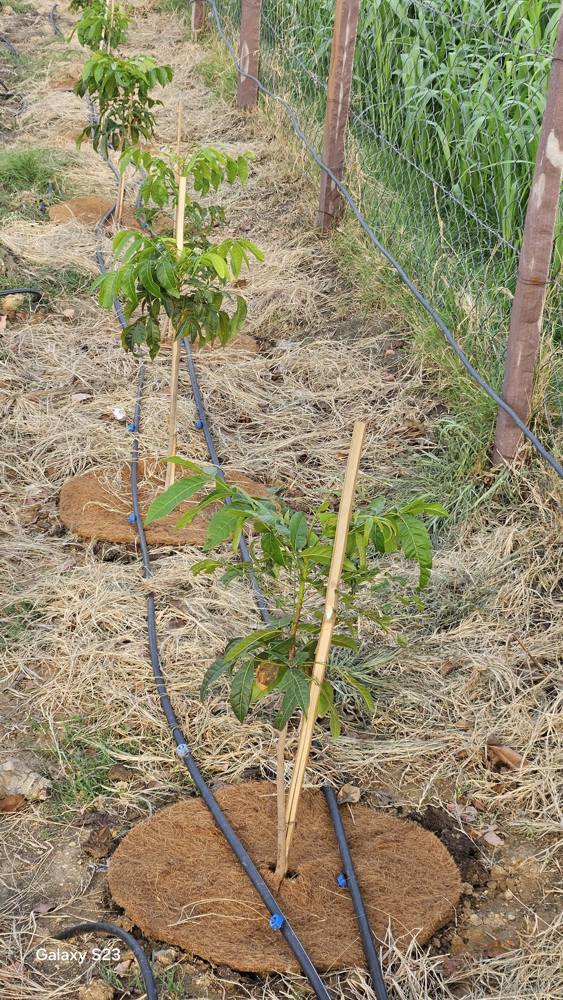

The Rule: Never Leave Soil Bare
At Kota Natural Farm, one principle guides everything: the soil must never be exposed to the sun. Bare soil in Rajasthan's 45°C summers loses moisture in hours, its surface cracks, and the microbial life that drives fertility dies off. Mulching is our simplest and most impactful defence.
Research backs this up — studies show that organic mulch reduces soil temperature by over 3°C and increases moisture retention by up to 5%, creating conditions where soil biology can thrive year-round.
Straw & Leaf Mulch
Every leaf that falls from our fruit trees, every pruning, every bit of straw after harvest — it all stays on the farm. We spread this material as a thick blanket across planting rows. It decomposes slowly, feeding earthworms and soil microbes while shielding the ground from direct heat and rain impact.
This is the most visible mulch on the farm. Walk through any row and you'll see a layer of dry organic matter between the trees, keeping the soil beneath cool and moist even in peak summer.
Coir Pith Rings
Around individual saplings, we use coir pith (coconut fibre) pressed into rings at the base of each tree. Coir holds up to 8 times its weight in water, slowly releasing moisture to the roots. Combined with drip irrigation, this creates a micro-zone of consistent moisture right where the tree needs it most.
The coir rings also suppress weed growth in the critical zone around the trunk, so the young tree doesn't compete for nutrients during its most vulnerable growth phase.

Living Ground Cover
Where possible, we let low-growing plants act as living mulch. Creeping legumes and ground cover crops spread across the soil surface, protecting it from the sun while also fixing nitrogen and feeding beneficial insects. It's mulch that grows itself.
This approach mimics the forest floor — in nature, soil is never bare. The living cover keeps the ground cool, reduces erosion during monsoon rains, and adds organic matter as it grows and sheds leaves.

The Result
Since adopting consistent mulching across the farm, we've seen significant improvement in soil health. The soil stays darker, holds moisture longer between irrigations, and is teeming with earthworms — a reliable indicator of biological activity. Plants establish faster and need less water.
Why it works — the science
- Organic mulch reduces soil temperature by 3–3.5°C, protecting root zones and soil life
- Mulched soil retains up to 5% more moisture — critical in semi-arid Rajasthan
- Soil organic carbon increases by 2–7% in mulched plots vs. bare soil
- Crop yields improve 40–60% with proper mulching in dryland conditions
- Zero waste — nothing burned, nothing thrown away, everything cycles back